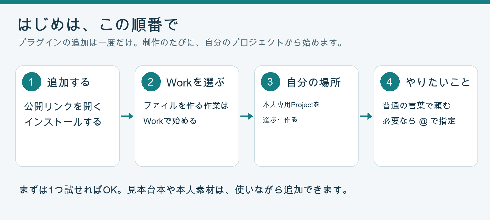

操作見本：素材を選び、修正依頼を返す
これは操作を練習するための短い台本です。個人情報や医学的な効果の説明は含みません。図はガイド説明用に作ったもので、AI生成のイラスト・動画の品質見本ではありません。
1．候補を選ぶ練習
ここは、候補の選び方を試す場面です。この図で、順番を確認します。候補を変更しても、下に表示される納品素材が自動的に変わるわけではありません。変更内容を元のチャットへ返すと、更新を依頼できます。
案A：導入手順の説明図

現在の納品内容（別案の選択だけでは、この素材は差し替わりません）
- 表示を始める発話
- この図で、順番を確認します。
- 配置
- 元比率を保つ説明図。撮影映像への実配置を検証する見本ではありません。
- 表示時間の目安
- 操作見本のため実際の動画尺は未設定
- 終わり・切り替え
- 「変更内容を元のチャットへ返すと」の前まで。操作説明の目安です。

素材の候補を比較・選択する（2案 ＋ 素材なし）
候補選択・修正メモ・書き出しの操作を練習するため。完成素材の品質評価は目的に含めない。
初期選択。導入手順を説明する図です。 図はガイド説明用の既存PNGです。AI生成イラスト・動画の見本ではありません。
候補選択・修正メモ・書き出しの操作を練習するため。完成素材の品質評価は目的に含めない。
候補選択の練習で選べます。同じ台本へそのまま使う本番素材の推薦ではありません。 図はガイド説明用の既存PNGです。AI生成イラスト・動画の見本ではありません。

2．表示方法を確認する
動画の中で素材を見せる方法は、大きく3つあります。話者の横に画像を置く方法、画像を全画面にする方法、動画を全画面にする方法です。この見本には動画ファイルは含まれていません。
表示形式の説明図

現在の納品内容（別案の選択だけでは、この素材は差し替わりません）
- 表示を始める発話
- 動画の中で素材を見せる方法は、大きく3つあります。
- 配置
- 元比率の説明図として表示。本番のインサートや全画面動画の制作見本ではありません。
- 表示時間の目安
- 操作見本のため実際の動画尺は未設定
- 終わり・切り替え
- 「この見本には動画ファイルは」の前まで。操作説明の目安です。
素材の候補を比較・選択する（1案 ＋ 素材なし）
候補選択・修正メモ・書き出しの操作を練習するため。完成素材の品質評価は目的に含めない。
①正方形インサート・②全画面静止画・③全画面動画の違いを示す説明図です。再生ボタンの図は動画ファイルではありません。 図はガイド説明用の既存PNGです。AI生成イラスト・動画の見本ではありません。
3．修正依頼を返す
修正メモを書いたら、修正依頼文を保存して、元のチャットへ送ります。このページからChatGPTへ自動送信されるわけではありません。